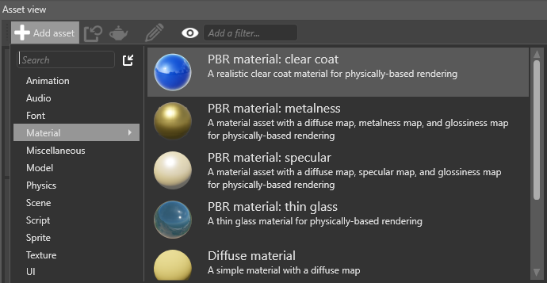

Clear-coat shading
Warning
Приносим свои извинения за неудобства. Для этой страницы нет перевода на русский язык. Она будет отображаться на английском языке.
Intermediate Artist Programmer
Clear-coat shading uses physically-based rendering to simulate vehicle paint.

Real vehicles typically have three layers of paint applied to the body, as in the diagram below:

To keep the shading simple, Stride only simulates the base coat (including optional metal flakes) and clear coat layers. Stride blends the layers depending on how far the camera is from the material. This reduces visual artifacts caused by the metal flake normal map (which becomes more visible as the camera moves away from the material).
Clear-coat shading has several advantages over creating the effect manually with material layers:
- layers are blended based on distance
- increased performance
- improved visualization
Add a clear-coat material
Stride includes a clear-coat material template. To add it, in the Asset View, click Add asset and select Material > PBR material: clear coat.

Alternatively, to set clear-coat properties yourself:
Select the material you want to use clear-coat shading.
In the Property Grid, under the Misc properties, next to Clear coat, click
 (Replace) and choose Clear coat.
(Replace) and choose Clear coat.
Note
For clear-coat shading to work correctly, make sure you enable Diffuse, Specular and Specular model under the material Shading properties.

Properties
You can access the clear-coat shader properties under Misc > Clear coat. They're split into three parts: the base paint and optional metal flake properties simulate the base coat, and the clear coat properties simulate the clear coat.
The metal flake properties simulate a metallic paint effect. To disable the effect, remove the metal flake normal map.
| Property | Description |
|---|---|
| Base paint diffuse map | The diffuse map used by the base paint layer (the lowest layer). This determines the color of the layer. |
| Base paint gloss map | The gloss map used by the base paint layer. For a coherent result, use the metal flake normal map as a mask. |
| Metal flakes diffuse map | The diffuse map used by the metal flake layer (the layer above the base paint). For a coherent result, use a value close to the base paint value. |
| Metal flakes gloss map | The gloss map used by the metal flake layer. For a coherent result, use the metal flake normal map as a mask. |
| Metal flakes metalness map | The metalness map used by the metal flake layer. For best results, use high values. |
| Metal flake normal map | The normal map used by the metal flake layer. This shapes the flake geometry. A metal flake normal map (StrideClearCoatMetalFlakesNM) is included in the Stride assets package. If the texture has a high UV scale, enable Use random texture coordinates below to reduce tiling effects. To disable the metal flakes effect, remove the normal map. |
| Coat gloss map | The gloss map used by the clear coat layer. Change this value to simulate different kinds of paint (eg matte). |
| Clear coat metalness map | The metalness map used by the clear coat layer |
| Orange peel normal map | The normal map used by the clear coat layer to create an "orange peel" effect. This reflects light in different angles, simulating paint imperfections whereby the texture appears bumpy, like the skin of an orange. An orange peel normal map (StrideClearCoatOrangePeelNM) is included in the Stride assets package. |
| Layer transition distance | The distance (in meters) at which the base paint layer transitions to the metal flake layer. This helps fight visual artifacts caused by the metal flake normal map (which becomes more visible as the camera moves away from the material). |
Reduce tiling and artifacts
Properties that use binary operators should use normalized values (ie between 0.0 and 1.0). For example, in the screenshot below, the left operator uses a value of 0.5.

Values over 1.0 might produce tiling artifacts, as in the image below (note the grid pattern):
StrideClearCoatMetalFlakesNM
The metal flakes in the metal flake normal map included in the Stride assets package (StrideClearCoatMetalFlakesNM) are quite large. For this reason, we recommend you:
use a high UV scale factor which tiles the texture (thereby shrinking the flakes)
enable Use random texture coordinates, preventing an obvious tiling effect
Note
The Use random texture coordinates option is costly, so we don't recommend you use it for mobile platforms.
Alternatively, use a normal map with a higher density of smaller metal flakes.